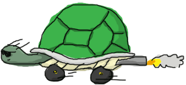

Khởi đầu
Shell
Erlang hỗ trợ SHELL/REPL như một số ngôn ngũ khác như Haskell, Scala,... . Bằng cách sử dụng Shell trong Erlang bạn có thể
kiểm tra nội dung của chương trình trong môi trường máy ảo; Erlang sẽ tiến hành biên dịch để chạy các tệp kịch bản của bạn và
triển khai chúng, đồng thời cũng cho phép bạn chỉnh sửa trực tiếp bà biện dịch ngay trong SHELL.
để truy cập vào shell trong Linux, bạn mở terminal lên và gõ lệnh $ erl.
Nếu terminal hiển thị lỗi không tìm tháy thì có thể do bạn chưa cài đặt hoặc trỏ tới không chính xác đường dẫn của thu mục,
còn nếu như nó hoạt đồng thì bạn sẽ nhìn thấy dòng chữ này:
Erlang R13B01 (erts-5.7.2) [source] [smp:2:2] [rq:2] [async-threads:0] [hipe] [kernel-poll:false] Eshell V5.7.2 (abort with ^G)
Xin chúc mừng bạn, bạn đã bắt đầu gia nhập thế giới của Erlang!
Đối với người dùng hệ điều hành Windows, bạn có thể tìm và chạy file thực thi erl.exe, tuy nhiên tôi đề xuất lên sử dụng werl.exe,
bạn có thể được tìm thấy trong thư mục (programs > Erlang).
Werl là một giao diện dòng lệnh Erlang được làm cho window, nó sẽ cung cấp cho người dùng giao diện cùng với thanh cuộn và những cậu lệnh chỉnh sửa phổ biến như
copy-pasing command-line editing (like copy-pasting, which got to be a pain with the standard cmd.exe shell in Windows). The erl shell is still required if you want to redirect standard input or output, or use pipelines.
Giờ chúng ra đã có hể chạy mã trong môi trường shell, nhưng trước tiên We'll be able to enter and run code in the emulator, but first, let's see how we can get around in it.
Các câu lệnh Shell
The Erlang shell has a built-in line editor based on a subset of Emacs, a popular text editor that's been in use since the 70s. If you know Emacs, you should be fine. For the others, you'll do fine anyway.
Đầu tiên, nếu bạn gõ một đoạn văn bản ( hay một số ký tự ) và nhấn ^A (Ctrl+A), bạn sẽ thấy con trỏ của bạn được di chuyển tới đầu dòng. ngược lại nếu bạn nhấn ^E (Ctrl+E) nó sẽ di chuyển tới cuối dòng.
bạn có thể sử dụng các phím mũi tên đi di chuyển con trỏ giữa các ký tự hoặc để hiện thị lịch sử những dòng lệnh trước đó bạn gõ để không phải lặp lại đoạn mã đã viết.
Nếu bạn gõ một vài ký tự vd như từ li và giữ phím tab, shell sẽ tự dộng hoàn thành từ cho bạn tới lists:. Tiếp tục nhấn phím tab, shell sẽ gợi ý cho bạn rất nhiều hàm sử dụng cho module lists:. bạn có thể sẽ nhìn thấy một danh sách các ký hiệu lạ, nhưng đừng bận tâm vội, bạn sẽ sớm quen thuộc với chúng thôi.
Tôi nghĩa rằng chúng ta đã nhìn thấy một số tính năng của shell nhưng có một điều là làm thế nào để thoát khỏi shell! Có một cách nhanh nhất để biết đó là gõ từ help(). để nhận được một danh sách các câu lệnh mà sử dụng trong shell ( và đừng quên ký tự kết thúc dòng lệnh . để chương trình có thể phân biệt kết thúc dòng lệnh và thực thi )
. chúng ta sẽ sử dụng các câu lệnh khác trong danh sách ở các phần sau nhưng trước tiên chúng ta cần quan tâm tới câu lệnh thoát khỏi shell
q() -- quit - shorthand for init:stop()
Đây là một trong số cách dể thoát khỏi chương trình , thực tế trong shell của Erlang có hai cách để thoát. Nhưng cả hai đều không thực sự hữu ích nếu shell bị treo!
Và nếu bạn chú ý khi bắt đầu shell, bên cạnh dòng chữ hiển thị thông tin vè phiên bản Shell của Erlang còn một dòng chú ý 'aborting with ^G'. Giờ hãy nhấn Ctrl+G, sau đó nhấn phím h!
User switch command --> h c [nn] - connect to job i [nn] - interrupt job k [nn] - kill job j - list all jobs s [shell] - start local shell r [node [shell]] - start remote shell q - quit erlang ? | h - this message -->
Nếu bạn gõ ký tự i sau đó tới ký tự c, Erlang sẽ dừng đoạn mã đoạn chạy lại và ngay lập tức đưa bạn trở lại shell. Với ký tự j,
nó sẽ hiẻn thị cho bạn nhìn thấy một danh sách các tiến trình đang chạy ( đi kèm với chữ sô và ký tự * sau nó cho bạn biết về công việc (job) mà bạn đạng sử dụng ), nhấn i
kèm sau nó một chữ số ( chú ý sử dụng cách và chữ số đó phải nằm trong danh sách các job đang chạy thông qua j) để ngắt job đó .
Dùng k để chấm dứt job đó. Dùng s để bắt đầu một job mới.
Eshell V5.7.2 (abort with ^G)
1> "OH NO THIS SHELL IS UNRESPONSIVE!!! *hits ctrl+G*"
User switch command
--> k
--> c
Unknown job
--> s
--> j
2* {shell,start,[]}
--> c 2
Eshell V5.7.2 (abort with ^G)
1> "YESS!"
Nếu bạn đọc thông tin hướng dẫn, bạn sẽ thấy rằng chúng ra có truy cập shell từ các máy khác. Bây giờ chưa phải là lúc để đi sâu vào vấn đề này. Nào giờ chúng ta sẽ bắt đầu sủ dụng shell.